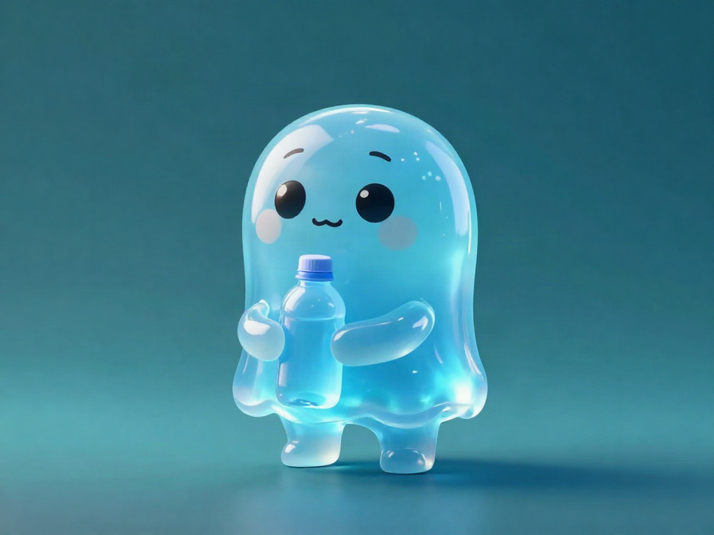
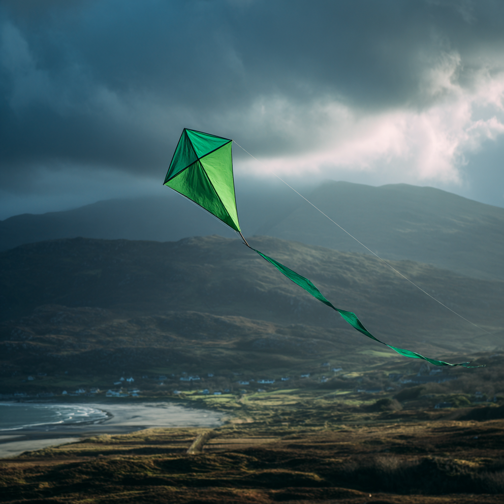
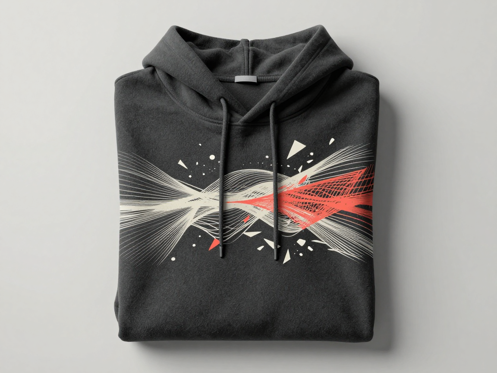
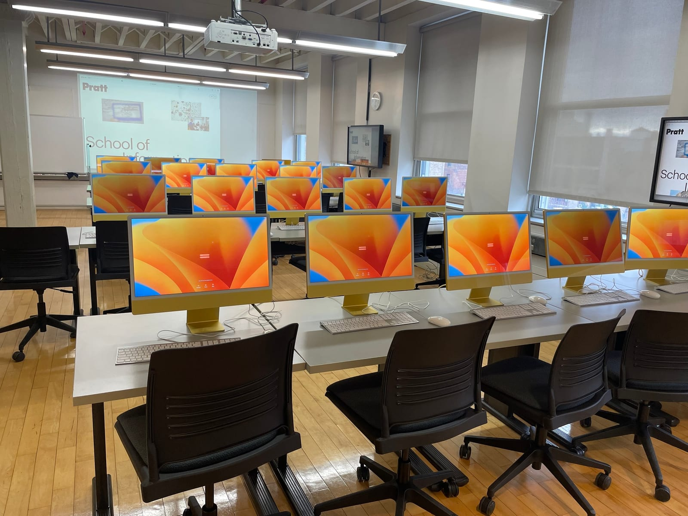

Ken Bai Creative Technologist
Creative technology
human in the loop, always.
“Great creative environments are designed with intent.”
12+ years at the intersection of design, technology, and AI systems, building the infrastructure that lets creative people do their best work. AI is a tool; humans still direct everything that matters.
Selected work
Skills applied on projects.

Mobile digital pet · Expo / React Native · 2026
A mobile pet whose wellbeing is derived from your own health, with auto-tracked steps and tapped water drive a mood that plays out as real-time animation. Health you can actually watch. The result: steps feed the mood engine straight from the device, zero manual logging.

Social enterprise · Ireland · 2025
A kite-as-metaphor mark and tagline system for a social enterprise backing community-led sustainability. Playful but refined, it lifts without being literal. The result: the identity is live in production at greenkite.ie.

Live storefront · 2023 - Present
The commerce arm of White Crane Design. Anime-inspired apparel where generative tools assist, but humans do the designing. Concept to shirt, ready to buy. The result: a live Square storefront selling the studio's own line.
Art-direction studio · Local Z-Image engine · RTX 5070 · 2026
My art-direction studio with its own local Z-Image-Turbo engine, a FastAPI async queue on an RTX 5070. The result: zero per-image cost, unmetered generation. The studio owns its engine.
Scalable infrastructure · AI × Design · 2024 - 2026
A multi-agent AI system that simulates presenting to a real design jury. Three critics with distinct personas, each with a different voice, generate visual feedback as they critique. The result: rebuilt in 2026 on a stack of GPT-5 mini, Claude Opus 4.5, Gemini 3 Pro.

Creative Technology Analyst, Mac Systems · Pratt Institute · 2024 - Present
How institutional financial crisis forced the choice to build rather than buy AI capability, and how the institution scaled its AI capability while keeping its autonomy and culture intact. The result: 250+ Apple endpoints under management via Jamf Pro and Apple School Manager.
Background
Bridging creativity and technology.
Tools that empower humans, not replace them.
Experience
- Directing creative strategy, identity, and design systems, turning business goals into coherent brand experiences.
- Prototyping generative AI workflows and LLM-integrated pipelines that expand what small creative teams can ship.
- Launched the White Crane apparel brand, from concept through production, with AI-assisted but human-driven design.
- Supporting creative technology infrastructure for a top design school.
- Architecting and managing a 250+ Apple endpoint ecosystem via Jamf Pro and Apple School Manager.
- Integrating generative AI tools and Python automation into lab systems to remove friction for makers.
- Leading a cross-functional team of 20+ staff across IT infrastructure, AV systems, and technical operations.
- Learning creative environments at scale through IT infrastructure, AV systems, and technical operations.
Education
Credentials
Practice
Fig. 02 · The next build
Let’s
build.
Tell me what you’re making.